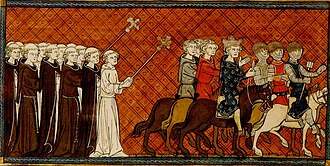

Religion
Die Rolle der Kirche im Mitellalter
Die Rolle der Kirche im Mitellalter

Zusammenleben von Juden und Christen
Zusammenleben von Juden und Cristen
Zunächst lebten Juden und Cristen friedlich miteinander. Sie standen sich nah, weil sie häufig im gleichen Zentrum wohnten, an den gleichen Gott glaubten und miteinander handelten. Die Christen verdienten ihr Geld meist selber, während die Juden Fernhändler waren und mit Kredit gegen Zinsen handelten, aber dies war bei den Christen verboten. Im 12. und 13. Jahundert wurde der Geldhandel aber wichtiger und so fingen auch die Christen mit dem Fernhandel an und verdrängten die Juden somit aus dem Geschäft.
Die erste Judenverfolgung war 1096, weil Christen die Juden fragten, ob sie sich Taufen lassen wollten. Wollten sie das nicht, wurden sie entweder zwangsgetauft oder getötet. 1492 wurden dann die letzten Juden aus Spanien vertrieben. Die Christen sahen die Juden als "Mörder Christi" und Bedrohung des Glaubens an.
- Es gab auch erfundene Anschuldigungen und Unterstellungen, wie beispielsweise:
- -Das die Juden Christliche Kinder entführten und folterten
- -Das sie geweihte Hostien stehlen würden und diese verbrennen, um Jesus Christus erneut zu foltern.
- -Juden wurde unterstellt, eine weltweite Verschwörung gegen das Christentum zu planen oder Christen systematisch auszubeuten.
Aus diesen Gründen war das zusammenleben der Juden und Christen nicht mehr friedlich.
Ausbreitung des Christentums
Wie begann die Ausbreitung des Christentums im Mittelalter? Im frühen Mittelalter breitete sich das Christentum im religiös zersplitterten Europa durch Missionare aus. Die Kirche nutzte dabei das „Top-down“-Prinzip: Sie überzeugte zuerst mächtige Herrscher wie den Frankenkönig Chlodwig I. Durch deren Taufen zog die ärmere Bevölkerung automatisch nach. Es entstand ein Bündnis, bei dem die Kirche den Herrschern religiösen Schutz bot und im Gegenzug weltliche Unterstützung erhielt. Ein zentraler Missionar in Deutschland war Bonifatius. Obwohl er anfangs scheiterte, hatte er später durch die Hilfe des Papstes Erfolg. Ein Schlüsselmoment war die Fällung der germanischen Eiche ( diese war ein Heiligtum des germanischen Gottes Donar) bei Geismar, an deren Stelle er eine Kirche errichtete. Diese Umwandlung alter Heiligtümer in christliche Stätten war eine wichtige Methode der Missionierung, bis Bonifatius 754 n. Chr. in Friesland getötet wurde.
▶ START
️ Ab dem 5. Jahrhundert
➜ Zerfall des Römischen Reiches.
Europa war religiös zersplittert.
Missionare verbreiteten das Christentum.
Um 496 n. Chr.
➜ Taufe von Chlodwig I.
Top-down-Prinzip: Das Volk folgt dem König.
Kirche und Herrscher unterstützen sich.
️ Frühes 8. Jahrhundert
➜ Bonifatius beginnt seine Mission.
Anfangs wenig Erfolg.
Später Unterstützung durch den Papst.
Um 723 n. Chr.
➜ Bonifatius fällt die Donareiche.
Aus dem Holz entsteht eine Kapelle.
754 n. Chr.
➜ Bonifatius wird in Friesland getötet.
▶ ENDE
Kreuzzüge
Kreuzzüge und Kreuzritter
Die Kreuzritter waren christliche Krieger, die im Mittelalter zwischen 1095 und dem späten 13 Jahrhundert an den Kreuzzügen teilnahmen. Ein Kreuzzug war ein vom Papst ausgerufener religiöser Krieg, das Ziel war es das heilige Land1 aus der Herrschaft muslimischer Staaten zu befreien und für Pilger zu sichern. Die Motivation der Kreuzritter war das Versprechen von Papst Urban dem II, dass einem alle Sündenstrafen erlassen werden und man falls man im Kampf fallt sofort ins Paradies eingeht. Das auffälligste Zeichen der Kreuzritter war das Stoffkreuz das sie gut sichtbar auf der Kleidung trugen.
1Gebiet von Jerusalem und Palästina
